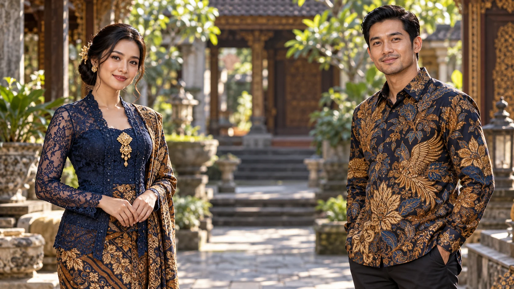

SEZON 1
TUR 1
TUR 1
DÜNYA KÜLTÜR
ŞAMPİYONASI
FARKLI KÜLTÜRLER · TEK DÜNYA
KARAKTERLER

Bu ülkenin karakter görseli henüz hazırlanmadı.

DENEME · CANLI KAYDA EKLENMEZ
BAĞLANTI BEKLENİYOR
LİDER ÜLKELİDER BEKLENİYOR
0PUAN
LİDERLİK 00:00KALAN SÜRE 25:00
#ÜLKE